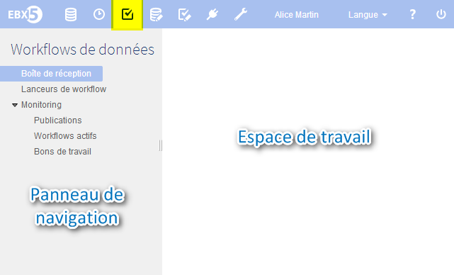
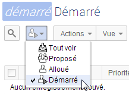

Utilisation de l'interface utilisateur de la section Workflow de données
Contenu de la section
Navigation dans l'interface utilisateur
La fonctionnalité workflows de données se trouve dans la section Workflows de données dans l'interface utilisateur d'EBX5.

Le panneau de navigation est composé des sections suivantes :
Boîte de réception des bons de travail | Tous les bons de travail qui vous sont alloués ou proposés, pour lesquels vous devez effectuer les actions spécifiées. |
Lanceurs de workflow | Liste des publications de workflow à partir desquelles vous pouvez lancer des workflows de données, en fonction de vos permissions. |
Monitoring | Vues pour le monitoring des workflows de données en cours pour lesquels vous avez les permissions nécessaires de visualisation. |
Publications | Publications pour lesquelles vous avez les permissions nécessaires de visualisation. Si vous disposez de permissions d'administration supplémentaires, vous pouvez également désactiver la possibilité de lancer les workflows de données depuis une publication à partir de cette vue. |
Workflows actifs | Workflows de données en cours d'exécution pour lesquels vous avez les permissions nécessaires de visualisation. Si vous disposez de permissions d'administration supplémentaires, vous pouvez également effectuer des actions d'administration à partir de cette vue, comme par exemple redémarrer une étape, ou terminer un workflow en cours. |
Bons de travail | Bons de travail pour lesquels vous avez les permissions nécessaires de visualisation. Si vous disposez de permissions d'administration supplémentaires, vous pouvez également effectuer des actions d'administration à partir de cette vue, comme par exemple allouer les bons de travails aux utilisateurs ou rôles. |
Workflows terminés | Workflows de données qui ont fini de s'exécuter, pour lesquels vous avez les permissions nécessaires de visualisation. Si vous disposez de permissions d'administration supplémentaires, vous pouvez également nettoyer les workflows terminés à partir de cette vue. |
Filtrage d'items dans les vues
Dans certaines vues, comme "Boîte de réception des bons de travail", vous pouvez filtrer les lignes affichées dans les tables en fonction de leur état. Dans ces vues, un menu est disponible à cet effet pour sélectionner l'état correspondant au filtre attendu.

Vue graphique d'un workflow de données
En tant qu'utilisateur avec un bon de travail à effectuer, ou en tant que superviseur ou administrateur de workflow de données, vous pouvez suivre l'avancement ou l'historique d'exécution d'un workflow de données en cliquant sur le bouton "Afficher"  dans la colonne "Workflow de données" des tables de l'interface de workflows de données. Ce bouton ouvre une pop-up qui affiche une vue interactive graphique de l'exécution du workflow de données. Dans cette vue, vous pouvez suivre l'avancement global de l'exécution, et sélectionner une étape individuelle afin de consulter le détail de ses informations.
dans la colonne "Workflow de données" des tables de l'interface de workflows de données. Ce bouton ouvre une pop-up qui affiche une vue interactive graphique de l'exécution du workflow de données. Dans cette vue, vous pouvez suivre l'avancement global de l'exécution, et sélectionner une étape individuelle afin de consulter le détail de ses informations.
 Sommaire du guide utilisateur
Sommaire du guide utilisateur